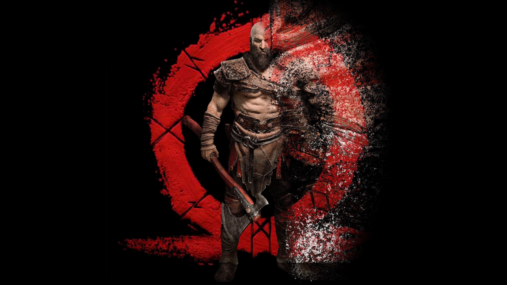

GOD OF WAR RESUME

CHARACTER INFO
Name: Kratos
Title: Ghost of Sparta
Origin: Greece
Weapon: Leviathan Axe, Blades of Chaos
Goal: To break the cycle of violence and find peace.
god of war idea
After the Norse saga, Kratos travels to ancient Egypt seeking peace.
But the balance of the Egyptian gods is collapsing as a dark power—born
from human fear and chaos—rises.
When Kratos is drawn into a war between gods like Set and Isis,
he must confront a terrifying truth:
the new evil threatening this world was created by his own past rage.
SKILLS
- Master Combatant: Expert in close-quarters combat using axes, blades, and hand-to-hand fighting.
- Weapon Mastery: Skilled with the Leviathan Axe, Blades of Chaos, and other mythic weapons.
- Spartan Rage: Can unleash immense strength and fury for short bursts of unstoppable power.
- Tactical Mind: Experienced in war strategy, ambush tactics, and battlefield awareness.
- Survival Instincts: Able to endure extreme environments — from frozen Norse lands to desert heat.
- Mythical Knowledge: Deep understanding of gods, monsters, and ancient magic systems.
- Father & Mentor: Skilled in teaching and guiding others (like Atreus) through strength and wisdom.
- Enhanced Reflexes & Endurance: Superhuman stamina and precision in combat situations.